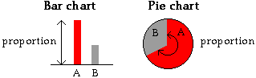

Other displays of categorical data
Two variations of the standard bar chart of categorical data are often encountered. A stacked bar chart is simply a bar chart in which the bars are stacked on top of each other. It is particularly useful when comparing several distributions since the stacked bar charts can be drawn side by side.
In a pie chart, a circle is split into segments according to the proportion of data values in each category. The angle for each category is given by the proportion.

Although pie charts seem visually different from the two types of bar chart, they are closely related.
In bar charts, stacked bar charts and pie charts, the area of ink for any category is proportional to the number of values in that category
World's richest people in 2014
The Forbes magazine regularly publishes a list of the world's richest individuals. The following table describes where those with personal fortunes over US$10 billion were based in 2014.
| Region | Number of people |
|---|---|
| USA | 43 |
| Europe | 45 |
| Asia | 24 |
| Other | 13 |
It should be noted that
The diagram below shows these data.
Drag the slider to the right to stack the bars of the bar chart.
In the diagram below, drag the slider to change the stacked bar chart into a pie chart.